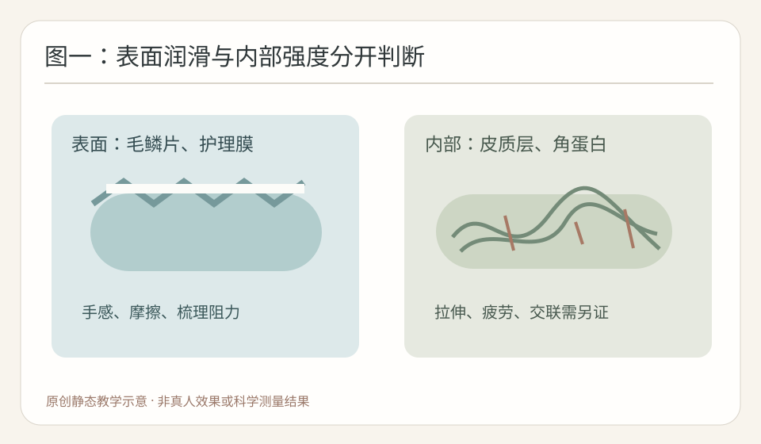
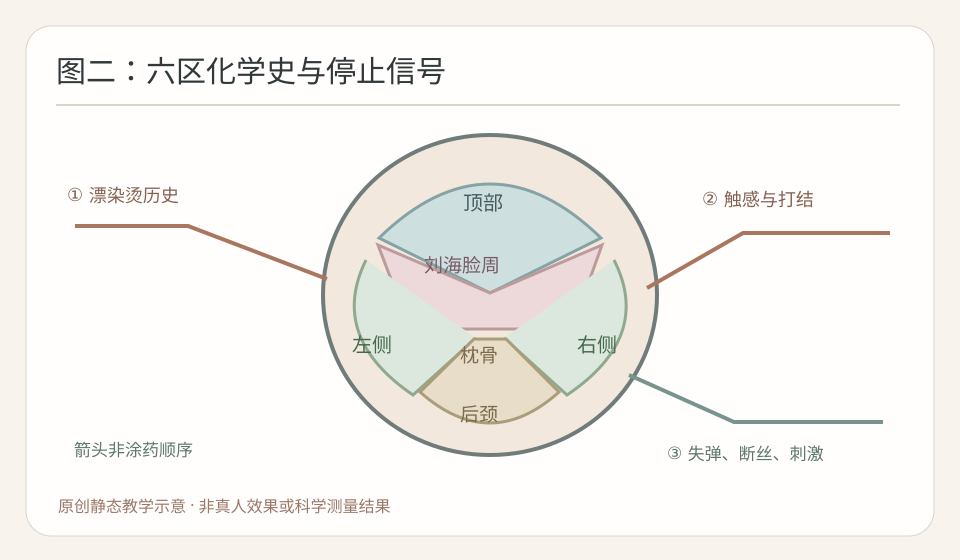
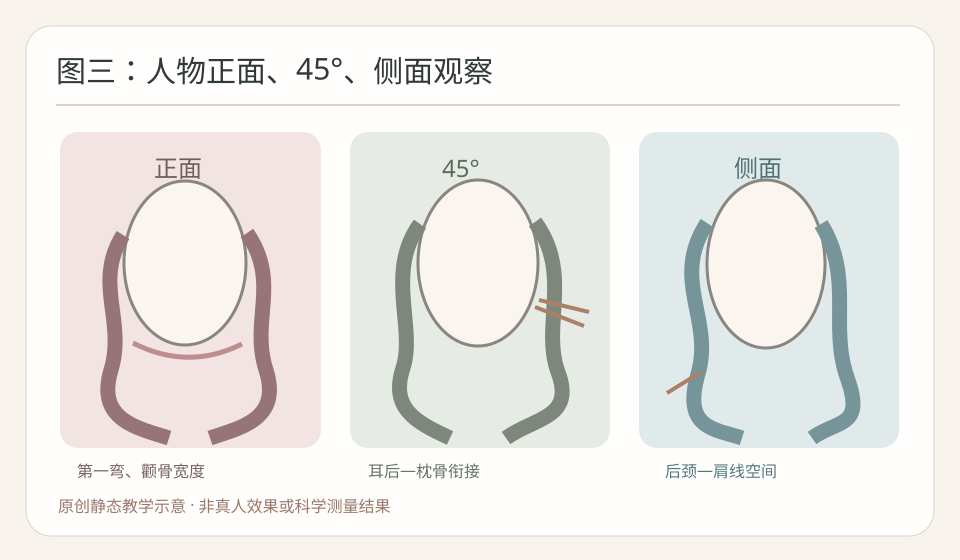

2026-11-13
【今日核心问题】一位旧烫旧漂顾客做完护理手感顺滑，能不能据此认为内部损伤完全修复、可立即再烫？不能。触感、毛发力学和卷度持久性是三个要分别观察的层级。
【毛发结构】最外层毛鳞片主要参与表面保护、摩擦与物质传递；皮质层包含角蛋白中间丝和相关蛋白，承担弯曲、拉伸与恢复；部分毛发存在髓质。硅氧烷、阳离子表活及聚合物等护理成分可以在特定条件下改变表面吸附与润滑，梳起来省力不能自动证明皮质层强度复原。
【四种作用】二硫键属于较持久共价交联，参与永久烫发的还原与氧化；氢键对水分敏感，参与湿发塑形和吹整后的暂时性形态；盐键/离子作用及疏水作用也参与角蛋白稳定。用手摸到滑，是表面摩擦体验，不是直接测量二硫键。
【六个环节】还原：厂家允许的TGA或其他完整还原体系作用于部分可接近二硫键，具体成分、浓度、pH、缓冲体系、温度与历史均重要；相同pH不代表相同药力，门店简称CA必须查实成分，“软化60%”不是实测断键率。水：改变氢键、塑化及黏弹性，湿态顺滑不等于健康。张力：卷入方向、杠径、提升角、发片厚度和圈数建立约束，旧漂尾不能强拉。热：只在厂家兼容完整体系中执行，机器温度非发芯实测，额外热可能增加损伤。干燥/冷却：水分迁移和结构松弛可改变束感；玻璃化相关温度不是通用热烫设定。氧化：按配套说明参与交联再形成，二剂不能修复所有既往损伤。
【证据的正确理解】不是所有护理都只能作用于表面：有些特定配方在离体研究中改善力学表现。但“某研究有效”不等于所有同名成分或任何沙龙护理都能使旧漂发恢复原生强度。需要分清表面摩擦、弹性模量、疲劳、断丝和多洗后卷度。旧漂尾若湿态异常伸长、撤力恢复差、发黏或断丝，应停止相关高风险化学热处理，不能护理后继续补烫。
【近7天搜索】先查2026-11-06至11-13公开研究；未核实到能够证明任意护理后旧漂发可安全立即再热烫的高质量近期真人对照数据。本课选择三项公开可核验原始研究。
【研究一】Yuichiro Nomura、Keiko Miyamoto，水添レシチンを配合したトリートメント処理による毛髪への特異的な吸着挙動に関して，日本化粧品技術者会誌，2026-09-20，DOI:10.5107/sccj.60.141，类型：原始表面吸附/材料实验。核心结论：在特定水添卵磷脂护理配方中，冲洗pH变化与表面吸附和产品表现相关。强度中：有仪器观察，但特定配方及生产商研发。支持表面膜改变护理表现；不能证明皮质永久修复或真人安全参数。
【研究二】Daijiazi Zhang、Nawel Baghdadli、Andrew J. Greaves，Reinforcing chemically treated human hair with citric acid，International Journal of Cosmetic Science，2025-01-06在线，DOI:10.1111/ics.13039，类型：原始HPDSC、微拉伸、疲劳与微XRD实验。核心结论：特定柠檬酸处理在不同化学处理毛束中改善部分结构和力学指标。强度中：多指标，但企业研发、特定实验配方。支持某些护理可能不仅改善表面；不能证明任意酸性护理、完全恢复健康发或可安全补烫。
【研究三】Takumi Miyamoto等，Tribological Properties between Taut Hair Fibers in Wet Conditions: A New Shampoo Formulation for Eliminating Stick-Slip Friction，Journal of Surfactants and Detergents，2021-03-24在线，DOI:10.1002/jsde.12499，类型：原始湿态毛束间摩擦实验。核心结论：不同氨基改性硅氧烷护理膜具有不同黏滑摩擦行为。强度中：直接测量，但配方特定、企业研发。支持易梳理可能来自表面润滑；不能推算二硫键恢复、拉伸强度或法式大S持久。
【分层】科研解释特定测试；厂家资料定义具体真人护理/烫发适用范围与禁忌；教材统一术语；门店八步设计六区执行是实践经验，需公仔头验证。
【模拟教学案例，非真实顾客】36岁女性，都市职场知性偏浪漫。脸型略长方圆，颧骨稍宽、下颌略方；顶部略平，后枕较圆，短颈、中等肩宽。自然干长度锁骨下约8厘米，低至中低层次，下摆集中；顶部发量中等但发径细软，左耳前较稀疏，两侧中等，后枕量多而粗硬，后颈密且向左上生长，右耳后自然轻微外向C，整体自然卷弱。根部约7厘米新生，中段两年前烫过且近一年染棕两次，发尾约4厘米漂浅后染深；常夹板，隔天洗，偶尔湿发睡觉，每日五分钟打理。
【需求与参考】顾客拿经吹整的法式大S照片：顶部轻C，颧骨旁收窄，下颌以下第一弯，锁骨主S，后颈清爽。她说“自然、不太卷、显脸小；护理后摸起来很滑，能否直接再烫？”先确认自然干与五分钟轻吹的可接受差异。
【诊断与风险】分别记录新生、烫染中段、旧漂再染尾的干态触感、湿态温和恢复、断丝与打结。护理顺滑并非安全证明。若发尾异常失弹、发黏或断丝，停止该段高风险化学热处理。最大风险是为了双S照搬健康发药剂，忽略旧漂段和有效长度；安全不明时改低风险非化学造型。
【八步】①知性略浪漫；②偏长方圆脸、平顶、短颈、左右密度不同；③以自然干底线及安全有效长度决定；④顶部柔C、脸周顺、后颈轻；⑤保守低至中低层次，保留耳前密度；⑥偏分弱C刘海顺毛流；⑦下颌以下第一弯、锁骨松S，若有效长度不足改柔C；⑧自然干与五分钟轻吹双态复盘。
【剪裁】先从正面、45度、侧背面标五个坐标：最高支撑、最大横向宽、第一弯、主卷峰、底线。后枕已有圆度不无限补高，侧后保守释放重量，不为所谓护理后轻盈无限打薄。确认有效长度后无药试排。
【药剂与终点】只在具体厂家明确适用、现场无停止信号时评估配套TGA/半胱胺等体系；CA简称先查真实成分，不把论文的柠檬酸CA误作还原剂。缺品牌型号，不编造pH、浓度、涂放顺序、软化分钟数与热参数；各区记首次接触、厂家规定观察和停止，异常失弹/发黏/断丝/头皮刺激立即停止危险操作。不得凭手感算二硫键断裂率。
【冲水和排杠】冲水依厂家完整说明；记录可见滴水、均匀湿润、局部偏干，不宣称精确含水率。发片平铺贴杠、温和张力、尾纸不折尾，杠轴顺毛流；顶部练30—34毫米/20—40度、两侧30—36毫米/10—30度、枕骨28—32毫米/15—35度、后颈可不卷，所有数字仅无药无热公仔头几何候选，非真人工艺。有效圈数由实际长度、杠径与路径决定，侧后至枕骨和后颈需连续。
【热/氧化】热烫或冷烫均按所选厂家完整兼容流程；温度、时间、干燥、冷却、氧化不自行发明。设备读数非发芯温度，二剂非损伤修复剂。出现异常灼热、失弹和断丝必须停止危险操作。
【预期与纠错】正面颧骨处不过度宽、下颌以下柔弯；45度耳后无鼓包；侧面后颈有空间、锁骨大S舒展。自然干和轻吹单独交付。若护理后顺、洗后仍打结，先查毛束聚拢、表面产品残留、化学史和整理方式，低风险解结/护理/保守修剪优先，不直接补药补热。
【美感与人物】护理可以改善某些情况下的表面反光与束感，却不能自动修正人物轮廓。正面：略长方圆脸、顶部平，适度柔C支撑但不拉尖；颧骨附近控制最强横向体积，左耳前保留覆盖；第一弯安排下颌以下，锁骨附近主S。45度：右耳后自然外流，观察太阳穴、耳后与枕骨是否鼓起，左右可无药试排非镜像杠轴，不把所有S峰叠在同高。侧面：后枕已有圆度，短颈不应让强卷及重量全压在肩线；背面看层次和底线是否断层。五个坐标——最高支撑点、最大宽度、第一弯、最大卷度、自然干底线——分别定，不能视为一个。若换成长颈窄肩少量发，需要保留更多侧后体积；没有唯一脸型答案。
【三张本轮原创静态SVG】图一原理“表面润滑与内部强度”：这张图看什么——左毛鳞片/护理膜与右皮质/角蛋白是不同结构，线条不能代表真实交联数量。图二技术“六区化学史、触感与停止信号”：这张图看什么——先分区记录历史和安全信号，再定排杠方向，箭头非药剂涂放顺序；正式边界按门店六区标准。图三美感“正面、45度、侧面”：这张图看什么——正面颧骨及第一弯，45度耳后衔接，侧面后颈肩线。均为原创抽象教学几何图，不是真人照片或效果证明。



【仅无药无热公仔头日常练习候选，非真人安全操作参数；杠径指工具外径，提升以局部头皮切线为0度】顶部30—34毫米、20—40度，建立柔C，顺分缝发旋，不强拉；压根查落杠和夹具，炸根查根向。枕骨28—32毫米、15—35度，后枕已有圆度以连接为主，防侧后和枕骨卷峰叠加。左右两侧30—36毫米、10—30度，第一弯下颌以下，左耳前少量区保留密度，右耳后外流可比较非镜像轴向。后颈可不卷、或0—15度弱C，顺根向，避免肩线堆积。刘海和脸周根据有效长度及额角发旋采用弱C或不卷，不强拉细软碎发。
【衔接与错误】顶部—侧后—枕骨—后颈按层次、第一弯和最大体积点对齐；尾纸平顺、发尾无折返、发片厚度可贴杠、张力温和；圈数随有效长度和工具变化，没有固定圈数万能S。硬折查尾纸夹具；尾翘查折尾、毛流、衣领；断层查相邻层次与第一弯；流向冲突查杠轴交界；后颈堆积查重量与主卷峰。护理再顺滑也不能直接消除这些几何错误。
【先问五问题】一“你说自然，是完全自然干还是愿意轻吹五分钟？”二“不要太卷，是不喜欢密集小卷还是第一弯也想很淡？”三“显脸小主要想改善颧骨、下颌还是耳后宽度？”四“以前哪些长度漂染烫过，护理前后在干态和湿态分别哪里打结？”五“旧漂尾若不适合继续化学处理，可否接受修短或减少一道S？”
【模拟对话】顾客：“我护理完摸着这么顺，应该修好了，可以马上再烫吧？”发型师：“顺滑说明现在表面摩擦和整理体验可能改善，但不能只凭手感判断皮质层全部恢复。我们要把漂染烫史和湿态恢复单独看。”顾客：“可我想自然、显脸小、不要太卷。”发型师：“先看你能安全保留的长度，正面定颧骨旁宽度和下颌第一弯，45度看耳后，侧面控制后颈重量。”顾客：“洗后能像图上一样亮吗？”发型师：“那张图经过吹整，我们会分别展示自然干和简单整理的状态，说明护理体验、卷度持久与打理成本的差异。”
【可复制话术】“护理后摸起来顺，是目前很好的整理体验，但不能凭手感保证旧漂发尾内部结构已完全恢复。我会先分区看处理历史、湿态恢复和断丝，再按具体厂家说明决定是否适合烫。设计上让顶部柔和、下颌以下第一弯、耳后不过度膨胀、锁骨附近保留松S。如果有效长度不足就调整设计，不为复制参考图强行加药或加热。交付时分开看自然干和五分钟吹整。”
【先练再看答案】模拟顾客A区为未经处理新生发，B区为旧漂后染深发尾。B区护理后摸着滑，但没有仪器拉伸和疲劳测量。顾客要求显脸小的自然大S。题1：能否认定B区内部强度恢复成A区？题2：2025年柠檬酸研究证明所有酸性护理都可补烫吗？题3：B区湿态发黏、异常伸长但护理后手感顺，能否加热？题4：最大横向宽度和第一弯必须在同一高度吗？题5：如何解释“修复”和“顺滑”？
【完整参考答案】1不能，触感/摩擦与内部力学不是同一指标。2不能，论文有特定配方和样本限制，也无真人二次热烫许可。3不能，异常失弹/发黏是停止信号，重新评估安全有效长度。4不必，五个视觉坐标应独立设计并做正面45度侧背验证。5解释护理可能改善梳理、摩擦和部分产品的实际材料指标，但必须依据对应证据；不承诺完全复原。
【思考路径】分区真实历史→触感和停止信号分别记录→核对产品禁忌与科研证据→安全有效长度→八步人物设计→六区无药试排→厂家完整工艺→自然干24小时多洗后复查。
【今日最值得拿到店里验证的1件事｜离体单变量实验】目的：比较一款普通冲洗型护理产品与清水对照，在温和湿态解结中是否影响可见停顿及毛束排列；不是二硫键或内部强度测试。
材料：8束同来源同历史、长度发量和初始缠结相近的离体毛束；产品标签明确的普通冲洗型护发素、清水、同一无毛刺圆头宽齿梳、软夹、计时器、量杯、刻度背景板、手机固定机位、温湿度计。无还原、氧化、漂粉和热设备，不在顾客头上实验。
唯一主动变量：A组4束按标签使用该护理产品并冲洗；B组4束对应流程仅用清水。控制来源、初始湿态、发长与质量、用水温度、接触/等待时间、冲水方式、同一梳具和操作者、操作力度、机位与环境。这里比较整体护理操作，不宣称分离出某种成分的作用。
步骤：①编号记录初始结点和第一弯；②随机分组并统一清水润湿；③按组进行护理/清水流程，温和冲净；④同一宽齿梳从发尾逐段向上，遇明显阻力停止，最多五次轻梳；⑤记录停顿次数、是否解结、可见断丝、毛束横向宽度；⑥自然干后及24小时再拍摄；⑦清水复湿自然干后重复两轮，保留无差异或反向结果。
空白表：A01、A02、A03、A04｜护理组｜初始结点待测｜停顿待测｜解结待测｜断丝待测｜24小时待测｜复湿两轮待测；B01、B02、B03、B04｜清水组｜相同字段全待测。实际逐束记账，记录温湿度和实际用量，未实施不写结果。
转化门店标准：如果多轮稳定，将产品型号、用量、湿态梳理停顿、自然干束感及复湿后差异加入公仔头练习；否则保留全部原始记录。实验不能确定真人药剂pH、软化时间、热烫温度、二剂或毛发结构修复率。
【今日结论卡】一个原理：护理后的顺滑与表面摩擦有关，不能直接证明皮质强度或二硫键已完全恢复；特定护理确可能有受控实验的增强证据，需要按产品与指标解释。一个错误：护理后旧漂发尾摸着滑就认定可安全再烫、补药或加热。下次观察：分区记录真实化学史、湿态恢复/断丝、第一弯和45度耳后体积，在离体毛束做护理产品与清水的低风险对比并保留24小时及复湿数据。